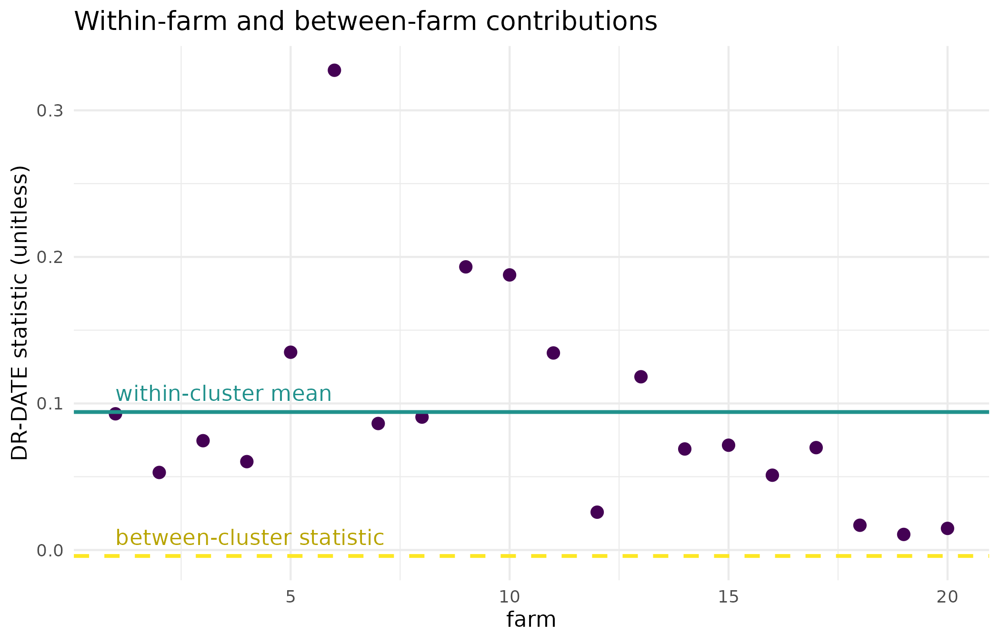

Why
A trial agronomist has 600 plots, but not 600 independent plots. The fertiliser trial ran on twenty farms, thirty plots each. The farms differ in ways I did not measure and cannot control for, and every test I know assumes my plots are independent, which they plainly are not. If I hand the whole file to a two-sample test, am I measuring the fertiliser or am I measuring the farms? This vignette answers that on a synthetic twenty-farm trial: it shows what the clustered test does with the data, how much of the signal is within farms and how much is between them, and what the same machinery says when the treatment does nothing at all.
What
hierarchical_test() runs any of the package’s causal
tests on data with a known grouping, and does two things a flat test
does not. It decomposes the statistic into a within-cluster
part – the test run inside each cluster and averaged – and a
between-cluster part, computed on the cluster-level summaries; and it
builds the permutation null by shuffling within clusters only,
so cluster-level variation stays in the null instead of being counted as
signal.
The two parts are combined according to weight_method.
"equal" gives the within and between components the same
weight; "icc" weights them by the intraclass correlation
estimated from the data, moving weight to the between component when the
clusters genuinely differ; "within_only" discards the
between component, which is the conservative choice when cluster-level
comparisons are not credible. method selects the test that
runs inside the decomposition, here "dr-date", the doubly
robust distributional treatment-effect test described in A treatment
that changes the spread and not the mean.
The result is a kernel_test_result with an extra
hierarchical element carrying within_stats
(one statistic per cluster), between_stat,
n_clusters and the weight_method used.
Do
A synthetic twenty-farm trial
Twenty farms, thirty plots each. Each farm carries its own random effect on yield with standard deviation 2, which is twice the residual noise; soil covariates drive treatment assignment, so the design is observational rather than randomised; and the treatment has a real average effect of 0.8 yield units.
set.seed(42L)
n_farms <- 20L
n_plots <- 30L
n_obs <- n_farms * n_plots
farm_id <- rep(seq_len(n_farms), each = n_plots)
farm_effect <- rnorm(n_farms, sd = 2)[farm_id]
soil <- matrix(rnorm(n_obs * 2L), n_obs, 2L)
treatment <- rbinom(n_obs, 1L, plogis(0.3 * soil[, 1L]))
yield <- 0.8 * treatment + farm_effect + 0.5 * soil[, 1L] +
rnorm(n_obs)
fit_icc <- hierarchical_test(
y = yield, treatment = treatment, covariates = soil,
cluster_id = farm_id, method = "dr-date",
n_permutations = 99L, weight_method = "icc", seed = 1L
)
fit_icc
#>
#> Hierarchical-DRDATE Test
#>
#> Statistic: 0.00874629
#> P-value: 0.0100
#> N: 600
#> Perms: 99
#> Kernel Y: rbf (bw = 2.642)The decomposition
within_mean <- mean(fit_icc$hierarchical$within_stats, na.rm = TRUE)
between <- fit_icc$hierarchical$between_stat
round(c(within_mean = within_mean, between = between,
combined = fit_icc$statistic), 4L)
#> within_mean between combined
#> 0.0941 -0.0041 0.0087
fit_icc$hierarchical$n_clusters
#> [1] 20The three weighting conventions on the same data
fit_equal <- hierarchical_test(
y = yield, treatment = treatment, covariates = soil,
cluster_id = farm_id, method = "dr-date",
n_permutations = 99L, weight_method = "equal", seed = 1L
)
fit_within <- hierarchical_test(
y = yield, treatment = treatment, covariates = soil,
cluster_id = farm_id, method = "dr-date",
n_permutations = 99L, weight_method = "within_only", seed = 1L
)| weight_method | Behaviour | Statistic | p-value |
|---|---|---|---|
| equal | within and between weighted alike | 0.0450 | 0.01 |
| icc | weighted by the estimated intraclass correlation | 0.0087 | 0.01 |
| within_only | between component discarded | 0.0941 | 0.01 |
The same trial with no treatment effect
The identical farms, plots, soil and treatment assignment, with the treatment term removed from the yield.
set.seed(42L)
yield_null <- farm_effect + 0.5 * soil[, 1L] + rnorm(n_obs)
fit_null <- hierarchical_test(
y = yield_null, treatment = treatment, covariates = soil,
cluster_id = farm_id, method = "dr-date",
n_permutations = 99L, weight_method = "icc", seed = 1L
)
fit_null$p_value
#> [1] 0.36The figure: where the signal sits
within_df <- data.frame(
farm = seq_along(fit_icc$hierarchical$within_stats),
statistic = fit_icc$hierarchical$within_stats
)
ggplot2::ggplot(within_df, ggplot2::aes(x = farm, y = statistic)) +
ggplot2::geom_point(colour = "#440154", size = 2.5) +
ggplot2::geom_hline(
yintercept = within_mean, colour = "#21918c", linewidth = 0.9
) +
ggplot2::geom_hline(
yintercept = between, colour = "#FDE725", linewidth = 0.9,
linetype = "dashed"
) +
ggplot2::annotate(
"text", x = 1, y = within_mean, label = "within-cluster mean",
hjust = 0, vjust = -0.7, colour = "#21918c"
) +
ggplot2::annotate(
"text", x = 1, y = between, label = "between-cluster statistic",
hjust = 0, vjust = -0.7, colour = "#B8A400"
) +
ggplot2::labs(
x = "farm", y = "DR-DATE statistic (unitless)",
title = "Within-farm and between-farm contributions"
) +
ggplot2::theme_minimal()
Per-farm within-cluster DR-DATE statistic for the trial with a real treatment effect (points), against the single between-cluster statistic (dashed line) and the mean of the within-cluster statistics (solid line). The spread across farms is what the combined statistic averages over, and what a flat test would silently mix with the between-farm contrast.
Read
On the trial with a real effect, the intraclass-correlation weighting returns a combined statistic of 0.00875 with a p-value of 0.01 against a 99-draw within-cluster null. The decomposition says where that comes from: the mean within-farm statistic is 0.0941 and the between-farm statistic is -0.00409, across 20 clusters. The figure shows the within-farm statistics are not interchangeable – they range from 0.0106 to 0.327 – so the combined number is an average over farms that differ in how strongly the treatment registers, not a single well-determined quantity.
The three weighting conventions give statistics of 0.045 (equal), 0.00875 (intraclass correlation) and 0.0941 (within only). They are not the same number and are not meant to be: each is a different summary of the same decomposition, and the choice belongs to the analyst before the data are seen, not after the p-values are read.
With the treatment term removed the same test returns a p-value of 0.36. The farm effects are still there, still large relative to the residual noise, and the within-cluster permutation scheme keeps them out of the verdict, which is the reason for using it.
Limits
This is a synthetic trial, with balanced clusters of exactly thirty
plots and a single level of nesting. Real designs are unbalanced and
often nested more deeply, and hierarchical_test() takes one
cluster_id vector, so a plots-in-paddocks-in-farms design
has to be collapsed to the level the analyst is willing to call
exchangeable. The decomposition reports the two components on the raw
statistic scale and does not weight the within-cluster statistics by
cluster size, so an unbalanced design should be summarised with care. A
single null run cannot demonstrate a type-I error rate; the null trial
above shows one draw, not a calibration study, and a claim about
false-positive control would need a repeated-sampling experiment this
vignette does not run. The intraclass correlation used by
weight_method = "icc" is estimated from the same data as
the statistic, so its weight carries the noise of that estimate.
What to read next
Multi-site trials and the permutation null runs the
clustered permutation scheme through bd_hsic_test()
instead, for a continuous treatment, and reports the per-cluster
breakdown as a diagnostic for site-specific effect modification. A
treatment that changes the spread and not the mean is the flat
version of the test that runs inside the decomposition here. Getting
started with kernR introduces the kernel and permutation machinery
all of these share.
Reproduce
Seed 42 for the synthetic trial and for the null
variant; seed = 1L passed to every test so the propensity
fit and the within-cluster permutation draws are fixed. Package versions
follow.
sessionInfo()
#> R version 4.6.1 (2026-06-24)
#> Platform: x86_64-pc-linux-gnu
#> Running under: Ubuntu 24.04.4 LTS
#>
#> Matrix products: default
#> BLAS: /usr/lib/x86_64-linux-gnu/openblas-pthread/libblas.so.3
#> LAPACK: /usr/lib/x86_64-linux-gnu/openblas-pthread/libopenblasp-r0.3.26.so; LAPACK version 3.12.0
#>
#> locale:
#> [1] LC_CTYPE=C.UTF-8 LC_NUMERIC=C LC_TIME=C.UTF-8
#> [4] LC_COLLATE=C.UTF-8 LC_MONETARY=C.UTF-8 LC_MESSAGES=C.UTF-8
#> [7] LC_PAPER=C.UTF-8 LC_NAME=C LC_ADDRESS=C
#> [10] LC_TELEPHONE=C LC_MEASUREMENT=C.UTF-8 LC_IDENTIFICATION=C
#>
#> time zone: UTC
#> tzcode source: system (glibc)
#>
#> attached base packages:
#> [1] stats graphics grDevices utils datasets methods base
#>
#> other attached packages:
#> [1] kernR_0.8.2
#>
#> loaded via a namespace (and not attached):
#> [1] vctrs_0.7.3 cli_3.6.6 knitr_1.51
#> [4] rlang_1.3.0 xfun_0.60 otel_0.2.0
#> [7] generics_0.1.4 S7_0.2.2 textshaping_1.0.5
#> [10] data.table_1.18.6.1 jsonlite_2.0.0 labeling_0.4.3
#> [13] glue_1.8.1 htmltools_0.5.9 PESTO_0.10.1
#> [16] ragg_1.5.2 sass_0.4.10 scales_1.4.0
#> [19] rmarkdown_2.32 grid_4.6.1 evaluate_1.0.5
#> [22] jquerylib_0.1.4 fastmap_1.2.0 yaml_2.3.12
#> [25] lifecycle_1.0.5 compiler_4.6.1 RColorBrewer_1.1-3
#> [28] fs_2.1.0 Rcpp_1.1.2 farver_2.1.2
#> [31] systemfonts_1.3.2 digest_0.6.39 R6_2.6.1
#> [34] bslib_0.12.0 withr_3.0.3 tools_4.6.1
#> [37] gtable_0.3.6 pkgdown_2.2.1 ggplot2_4.0.3
#> [40] cachem_1.1.0 desc_1.4.3